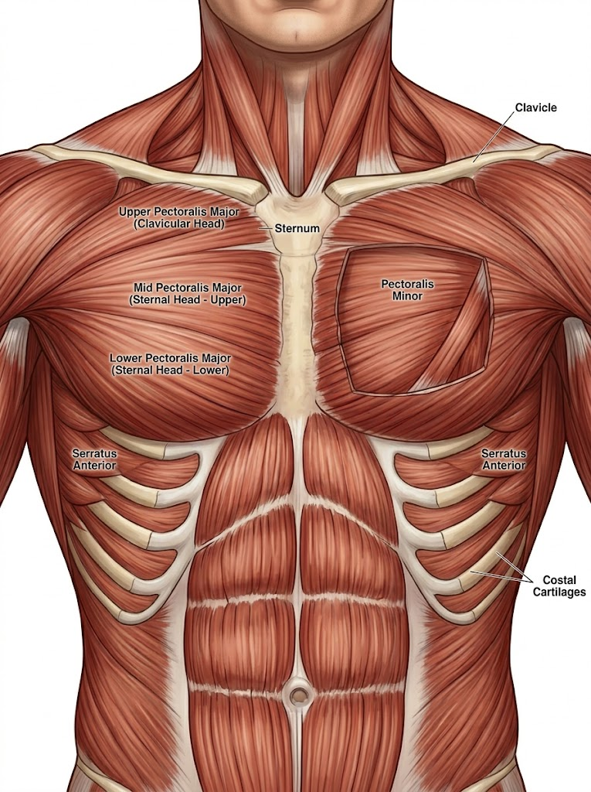
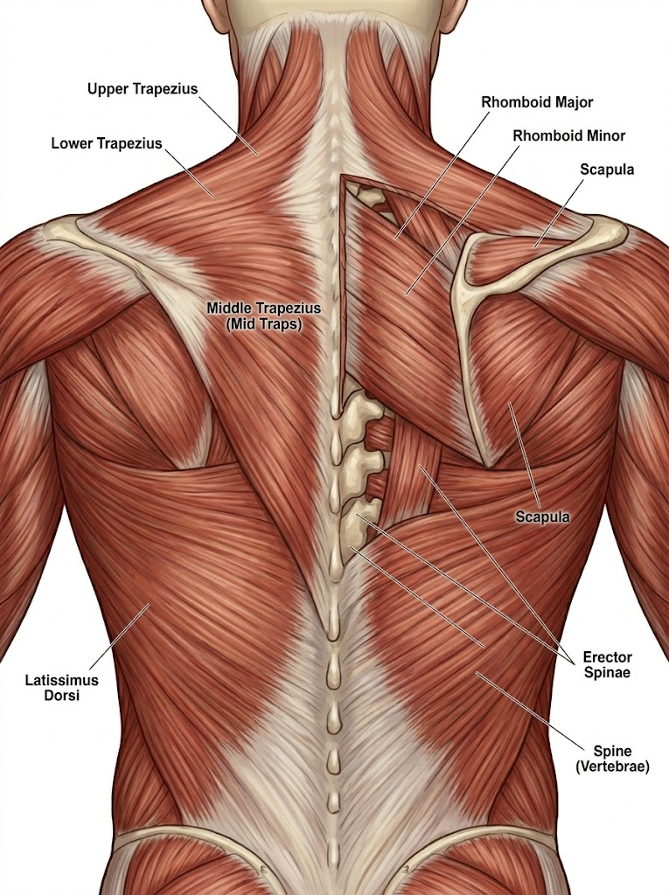
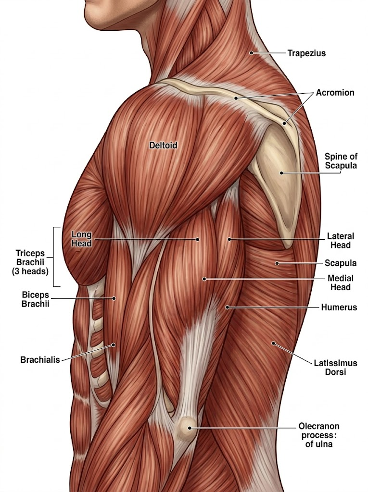
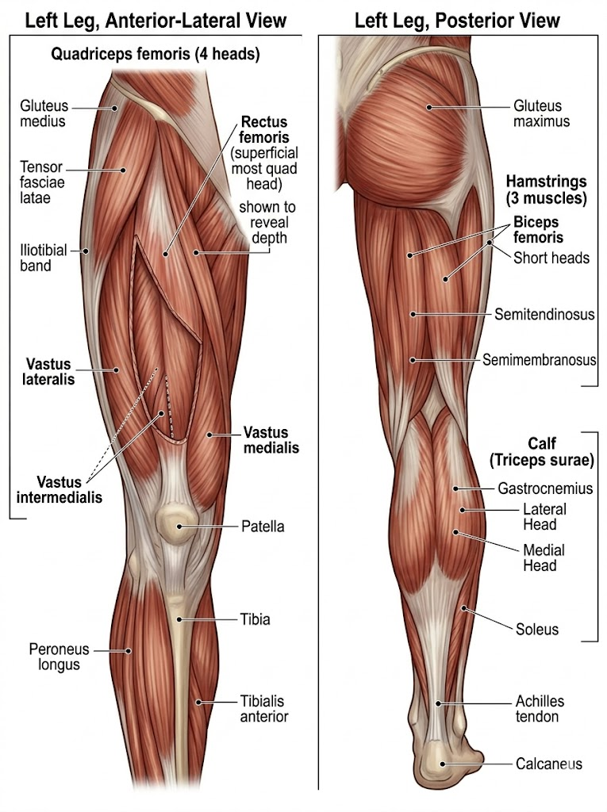

Science-Based Lifting
what the research actually says about building muscle —
no bro science, no bullshit, no motivation speech..
This is just personal research. I could be right, I could be wrong — I’m not claiming I know everything. I just looked into this stuff, read studies, and tried to understand it properly. If you want to go deeper, check the references.
Most of what’s here is backed by sources. If you see something without a reference, it’s probably just my own thoughts
three mechanisms are proposed for muscle growth: mechanical tension, metabolic stress, and muscle damage. mechanical tension is the primary one. it's the force applied to the muscle when loaded — especially in a lengthened position. the pump, the burn, the soreness — side effects, not the signal. exercise selection should center on loading muscles at stretch. [1]
dose-response is real: more sets → more growth, up to a recoverable limit. below ~10 sets/week per muscle you're leaving gains untouched. above ~20 sets/week you're accumulating fatigue without adding stimulus. 10–15 sets is the practical sweet spot for most people. [2] [3]
training a muscle 2× per week beats 1× when weekly volume is equal. not because the muscle needs the signal twice — because two moderate sessions are higher quality than one brutal one. 2× per week is the evidence minimum. 3× is fine. [4]
| Range | Hypertrophy? | Tradeoff |
|---|---|---|
| 5 – 8 | works | high joint/CNS load |
| 8 – 15 | optimal | best effort-to-recovery ratio |
| 15 – 30 | works | very fatiguing mentally |
hypertrophy is rep-range agnostic. what matters is effort relative to failure — not the count. the "8-12 zone" is practical, not magical. [5]
RIR = reps in reserve. RIR 1–3 produces the same hypertrophy as failure with significantly less accumulated fatigue and injury risk over weeks. training to failure every set kills your weekly volume capacity. [6] [7]
exercises that load a muscle at its longest length produce more hypertrophy per set than the same exercise in a shortened position. this came out of research in the early 2020s and basically changed exercise selection thinking. [8]
incline curl > standing curl · overhead extension > pushdown · RDL > leg curl · deep squat > partial squat. if two exercises train the same muscle, pick the one that stretches it more. [9]
muscles adapt to whatever load you give them. same weights every week = no growth. overload means consistently increasing the demand: more weight, more reps, better ROM. rule: hit the top of your rep range for 2 sessions in a row → add 2.5 kg. write your sessions down. [10]
for each muscle: 2–3 exercises chosen by biomechanics, stretch position, and non-redundancy. no 8-exercise chest days. selection quality beats selection quantity.

incline shifts emphasis to the clavicular (upper) head while still hitting the sternal head. this single exercise covers most of the pec major. dumbbells allow greater ROM and adduction at top. [11]
cables maintain constant tension through full ROM. low-to-high loads the pec at its lengthened position. pec deck is a valid alternative. [12] [8]
flat bench loads the sternal head — already covered by incline at 30-45°. adding flat bench on top of incline + fly duplicates stimulus and adds shoulder impingement risk. keep it if you compete in powerlifting. otherwise, skip it. [11]

vertical pull for lat width. shoulder-width grip maximises lat stretch at the top. pull-up and pulldown are equivalent for lat hypertrophy — use whichever lets you load progressively. [13]
horizontal pull for mid-back thickness. chest-supported removes lower back fatigue — important if you're also squatting and deadlifting the same week. [14]

most efficient shoulder exercise. anterior and lateral heads under heavy load simultaneously. note: anterior delt is already getting volume from pressing (incline, bench) — OHP mainly justifies itself here for lateral head and total shoulder mass. [15]
shoulder width = lateral head. cable keeps tension at the bottom (muscle stretched), unlike dumbbells where tension drops to zero at your side. [16]
posterior delt is almost never hit enough. presses and rows don't isolate it. required for shoulder balance and long-term joint health. [17]

arm hangs behind the torso → biceps long head loaded at its longest length. probably the single most effective bicep exercise based on stretch-mediated hypertrophy research. creates the peak. [8] [18]
neutral grip shifts load from biceps to brachialis. brachialis sits under the bicep — growing it physically pushes the bicep up, increasing arm peak height. [18]
triceps long head is ~55% of total tricep mass. it's only fully lengthened with arms overhead. pushdowns don't stretch the long head at all. if you only do pushdowns you're building the smaller heads. [8] [19]

deep squats (below parallel) load all 4 quad heads at a longer length than partial squats. research shows significantly greater quad hypertrophy with full depth. full ROM every rep. [20]
gold standard hamstring exercise. loads hamstrings in a stretched position — consistently outperforms leg curl for growth, especially biceps femoris long head. feel the stretch, not the pump. [21]
rectus femoris is the only quad head that crosses both hip and knee. during squats your hip is flexed → rectus is shortened → can't be fully loaded. leg extension is the only exercise that fully trains it. [22]
calves aren't hit enough by compound work to grow. standing targets gastrocnemius, seated targets soleus. full ROM — heel below the platform — is critical. 15–25 reps suits slow-twitch dominant fibers. [23]
full body, every other day. two workouts (A and B) alternated. week 1: A/B/A. week 2: B/A/B. every muscle hits 3× per week. rest days between sessions are not optional — that's when growth happens. [24]
session length: 60–75 min. rest 2–3 min between compound sets, 90s between isolation sets.
| # | Exercise | Sets | Reps | RIR | Coaching note |
|---|---|---|---|---|---|
| 01 | Squat or Hack Squat | 2 sets | 6–10 | 2 | Full depth. Control the negative. Heels elevated on plates if ankles restrict depth. |
| 02 | Incline DB Press 30–45° | 2 sets | 8–12 | 2 | Elbows ~75° from torso. Big stretch at the bottom. Don't flare. |
| 03 | Lat Pulldown or Pull-Up | 2 sets | 6–10 | 2 | Full stretch at the top. Neutral or shoulder-width grip. No kipping. |
| 04 | Romanian Deadlift | 2 sets | 8–12 | 2 | Push hips back, feel the hamstring stretch. Bar stays close to legs. |
| 05 | Overhead Cable Extension rope | 2 sets | 10–15 | 2 | Arms fully overhead. Full stretch. Slow eccentric. |
| 06 | Incline DB Curl | 2 sets | 10–15 | 2 | Arm hangs behind torso. No swinging. Slow negative. |
| 07 | Cable Lateral Raise | 2 sets | 12–15 | 2 | Slight forward lean. Lead with elbow. Full ROM down. |
| # | Exercise | Sets | Reps | RIR | Coaching note |
|---|---|---|---|---|---|
| 01 | Overhead Press DB or BB | 2 sets | 8–12 | 2 | Strict form. Don't turn it into a push press. Full lockout. |
| 02 | Chest-Supported Row | 2 sets | 8–12 | 2 | Full stretch forward. Retract scapula at peak. No torso swinging. |
| 03 | Leg Press | 2 sets | 10–15 | 2 | Full depth. Don't lock knees out. Feet shoulder-width. |
| 04 | Cable Fly low-to-high | 2 sets | 12–15 | 2 | Slight forward lean. Big stretch at bottom. Don't touch hands at top. |
| 05 | Leg Extension | 2 sets | 12–15 | 2 | Pause at full extension. Control the eccentric. |
| 06 | Hammer Curl | 2 sets | 12–15 | 2 | Neutral grip throughout. No body English. |
| 07 | Rear Delt Fly cable or pec deck | 2 sets | 12–15 | 2 | Lead with elbows. Full stretch forward. |
| 08 | Standing Calf Raise | 2 sets | 15–20 | 2 | Heel below the step. Full ROM. Pause at top and bottom. |
* triceps get indirect volume from all pressing — effective total is higher.
track every session. write weight × reps for each set. when you hit the top of your rep range for 2 sessions in a row — add 2.5 kg. if you can't hit the bottom of the range, stay at the weight. no ego lifting. [10]
every 8–10 weeks: one deload week. same exercises, 50% volume, RIR 4–5. connective tissue needs this. you'll come back stronger after.